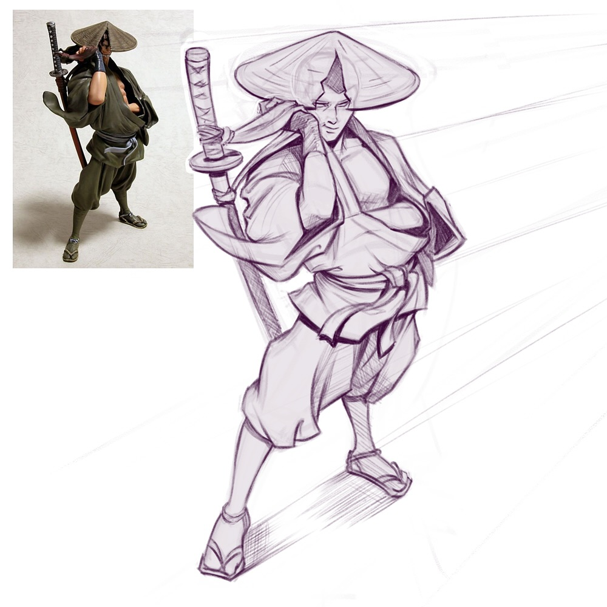
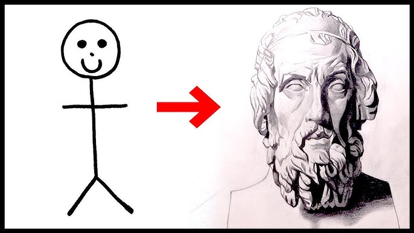
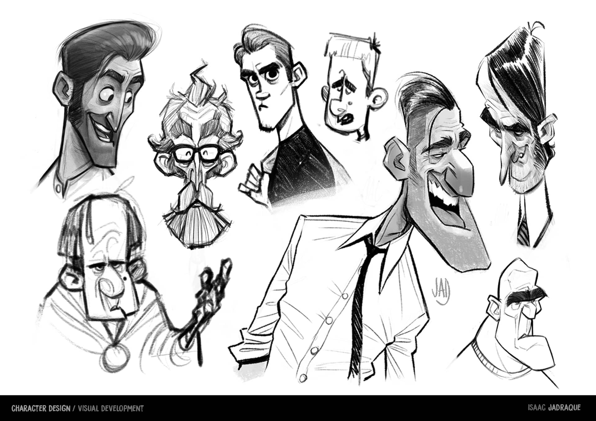

Inicio
Bienvenido al mundo del dibujo. Aquí aprenderás sobre los fundamentos del arte, desde lo más básico hasta el diseño de personajes.


Principios Básicos
Los principios del dibujo se refieren a las bases fundamentales que guían la creación de imágenes. Estos principios, como la línea, la forma, el espacio, la perspectiva y la composición, ayudan a los artistas a representar objetos, ideas y emociones de manera efectiva.

Principios básicos del dibujo:
- Línea: La línea es la base de cualquier dibujo y se define como el trazo dejado por un punto en movimiento. Se utiliza para crear contornos, formas y texturas.
- Forma: La forma se refiere a la apariencia general de un objeto, ya sea bidimensional (como un círculo o cuadrado) o tridimensional (como un cubo o esfera). La forma es esencial para la representación de objetos en el espacio.
- Espacio: El espacio se refiere a la relación entre los objetos en el dibujo y el área circundante. Puede ser positivo (el área ocupada por los objetos) o negativo (el área vacía entre los objetos).
- Perspectiva: La perspectiva se refiere a la representación de la profundidad y la distancia en un dibujo, haciendo que los objetos parezcan más pequeños y cercanos a medida que se alejan del observador.
- Composición: La composición se refiere a la disposición de los elementos visuales en un dibujo, incluyendo la forma, el espacio, el color y la textura, para crear una imagen coherente y atractiva.
- Valor: El valor se refiere a la oscuridad o luminosidad de un color, lo que permite crear sombras y luces en el dibujo para dar volumen y forma a los objetos.
- Textura: La textura se refiere a la apariencia de la superficie de un objeto, como rugosa, lisa, suave, etc. Se puede representar a través de diferentes técnicas de dibujo.
Estructura
La estructura de un dibujo se refiere a cómo se organizan los elementos visuales (como puntos, líneas, planos, formas, colores, texturas y espacio) para crear una imagen coherente y significativa. Implica la organización de estos elementos en el espacio, la representación de la forma y la composición general de la imagen.

Elementos básicos de la estructura del dibujo:
- Punto: El punto es la unidad más básica de la expresión visual. Puede usarse para crear líneas, formas y texturas.
- Línea: Una línea es una sucesión de puntos y puede ser recta, curva, gruesa, delgada, etc. Las líneas se utilizan para definir contornos, crear formas y establecer la dirección y el movimiento en un dibujo.
- Plano: Un plano es una superficie bidimensional limitada por líneas. Los planos pueden ser formas geométricas o irregulares y se utilizan para crear la sensación de volumen y espacio en un dibujo.
- Forma: La forma se define por las líneas y los planos que delimitan una figura. Puede ser geométrica (cuadrados, círculos, etc.) o orgánica (formas libres y naturales).
- Espacio: El espacio se refiere a la sensación de profundidad y distancia que se crea en un dibujo. Se puede lograr a través de la perspectiva, la superposición de elementos, el tamaño relativo de los objetos y el uso del color y el valor.
- Color: El color agrega valor emocional y expresivo a un dibujo. Se puede utilizar para crear contrastes, armonías y efectos de profundidad.
- Textura: La textura se refiere a la cualidad visual de la superficie de un objeto. Se puede sugerir a través de líneas, puntos, patrones y la manipulación del valor.
- Valor: El valor se refiere a la luminosidad u oscuridad de un color o tono. Se utiliza para crear luces y sombras, definir la forma y añadir profundidad.
Importancia de la estructura en el dibujo:
- Organización: La estructura ayuda a organizar los elementos del dibujo de manera coherente, facilitando la comprensión de la imagen por parte del espectador.
- Claridad: Una estructura bien definida ayuda a transmitir la idea o mensaje deseado de manera clara y efectiva.
- Expresión: La estructura permite al artista expresar emociones, sensaciones y conceptos a través de la disposición de los elementos visuales.
- Realismo: En el dibujo técnico y estructural, la estructura es fundamental para representar objetos y estructuras con precisión.
Diseño de personajes
El diseño de personajes implica crear la apariencia y la personalidad de un personaje para una historia, ya sea un dibujo, un videojuego, una película o cualquier otro medio visual. El objetivo es hacer que el personaje sea memorable, atractivo y conectado con la audiencia.

Conceptos clave en el diseño de personajes:
- Personalidad: Un buen diseño de personaje debe reflejar su personalidad a través de su apariencia, lenguaje corporal y vestimenta.
- Apariencia: La apariencia física, incluyendo la forma, el color, el estilo de ropa y los accesorios, debe ser coherente con la personalidad y el rol del personaje.
- Silueta: Una silueta clara y reconocible es crucial para la memorabilidad del personaje.
- Paleta de colores: La elección de colores puede transmitir emociones y reforzar la personalidad del personaje.
- Exageración: La exageración en ciertos rasgos físicos puede hacer que el personaje sea más llamativo y caricaturesco.
- Narrativa: El diseño del personaje debe estar conectado con la historia y el mundo en el que vive.
- Funcionalidad: En algunos casos, como en videojuegos, el diseño del personaje debe tener en cuenta su funcionalidad y cómo interactúa con el entorno.
- Proceso creativo: El diseño de personajes implica un proceso de investigación, bocetos, refinamiento y pruebas para llegar al diseño final.
- Estilo: El estilo de dibujo puede variar desde realista hasta caricaturesco, anime, o estilo de píxel, dependiendo de la producción.